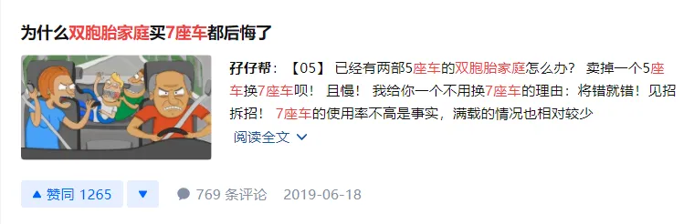
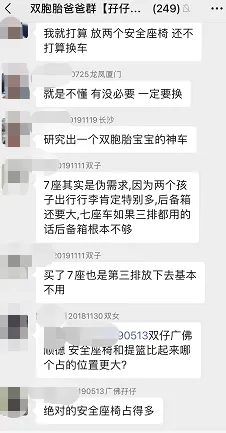
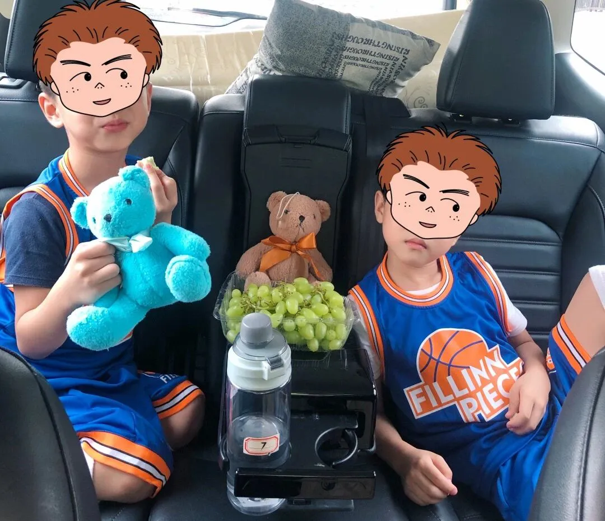
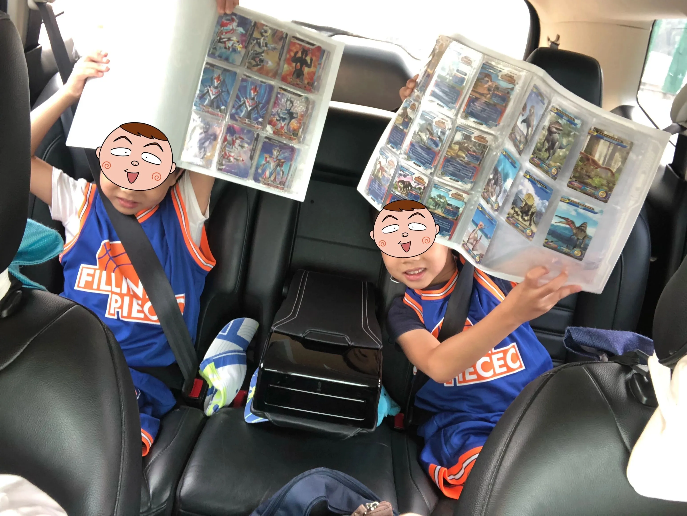
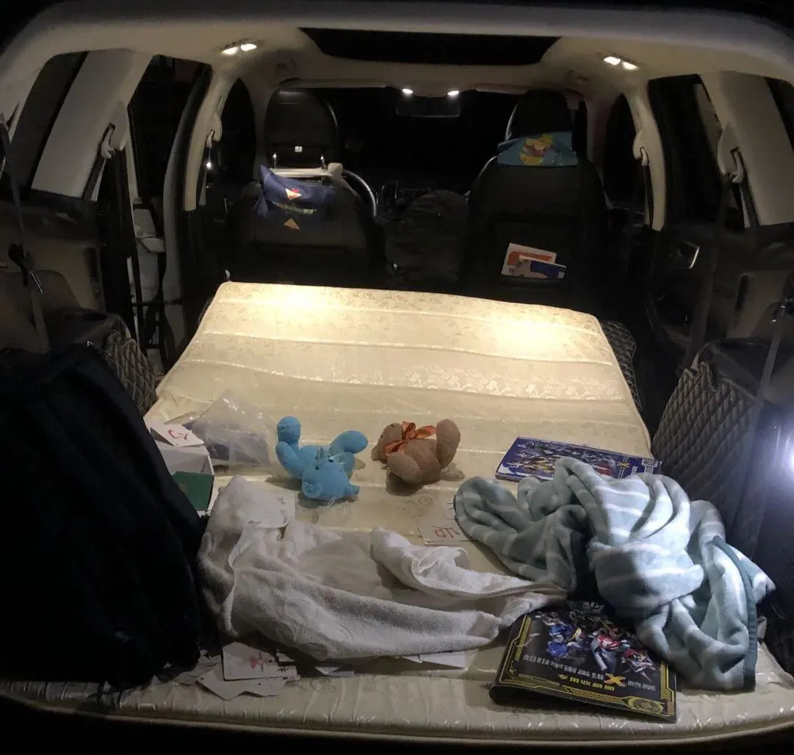
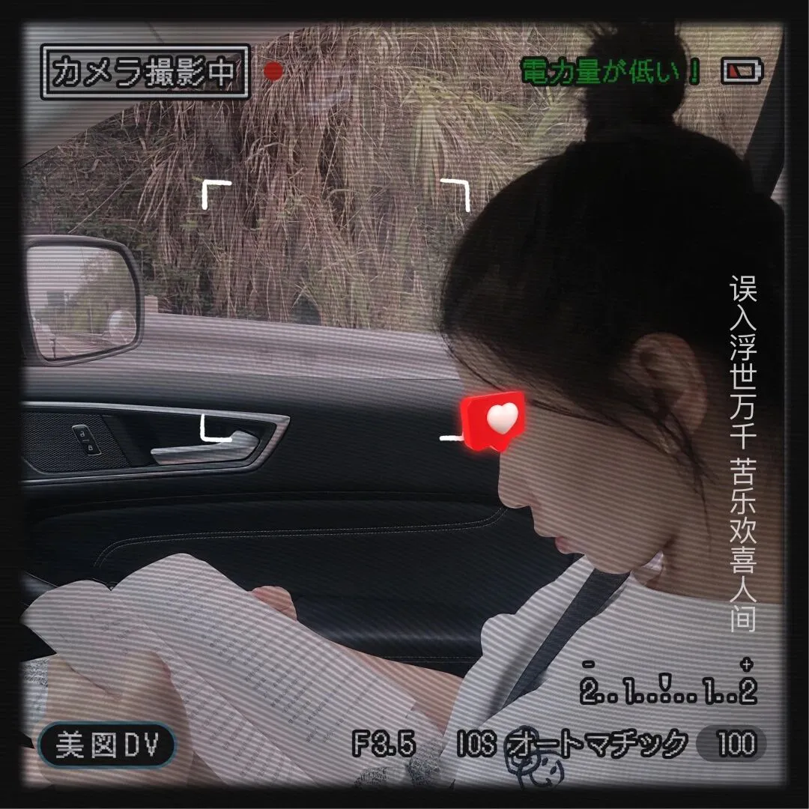
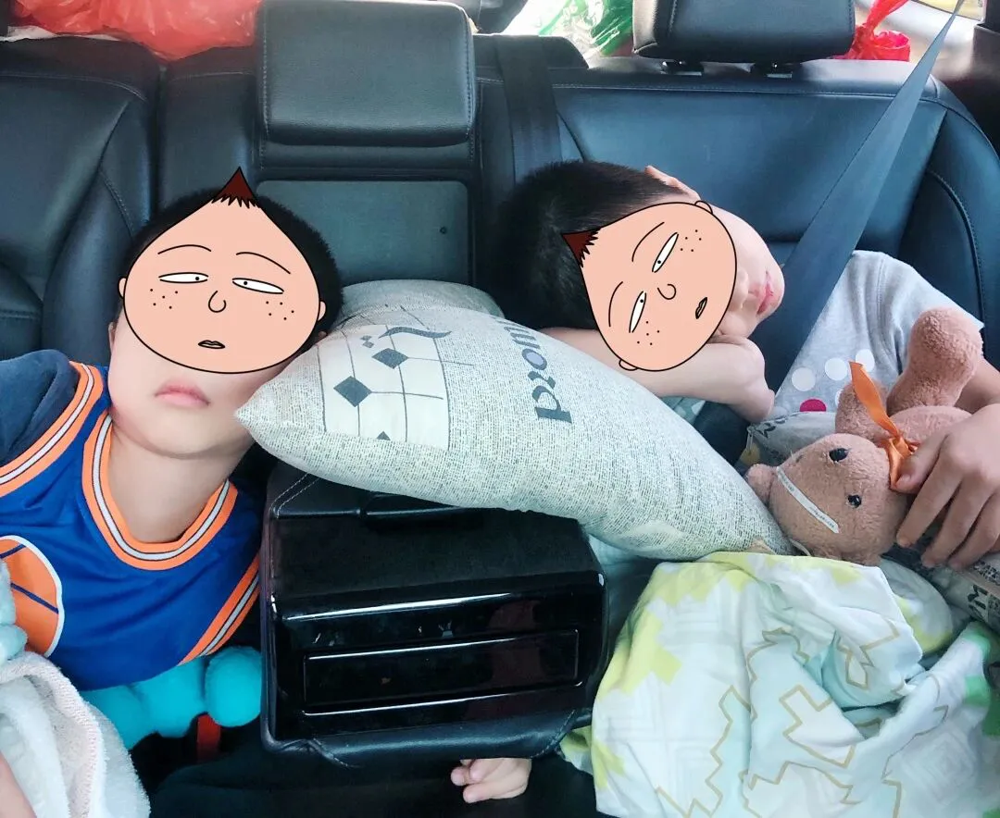

孖仔帮
公众号ID：twinsbang
关注
文|圆圈妈
网图|侵删
#先插播一则群通知#：第14期双胞胎跳蚤市场群已开放，公众号输入“赶集14”，扫码即可入群。
1
国庆小长假，我们回了一趟圆圈爸的湖南老家。
深圳出发，一路向北，从1号早晨8点开到3号凌晨5点，期间还在韶关丹霞山中转了下，终于到了圆圈心心念念的爷爷奶奶家。
下车后，我把行李从车上拿下来，看着满车厢一片狼藉，心疼不已，又感激不尽。
辛苦了，我的锐界，带着两个娃，一直走走走停停，磕磕碰碰，还好有你在，这一路虽然累，但真的好香。
这车，号称7座，但其实是个伪概念，17年阴差阳错买的，其实当时心仪的是汉兰达，却鬼使神差入了锐界，心里对这个半路杀出的程咬金有点介怀，果然使用上不是很惬意，19年还写过一篇《为什么双胞胎家庭买7座车都后悔了》，专门吐槽这车。
我记得，这篇在知乎上还掀起了一场不小的骂战，而我也因此认识了很多双胞胎奶爸，大家都因双胞胎结缘，因7座车不骂不相识，齐聚在双胞胎爸爸群，聊车聊工作聊孩子聊媳妇和丈母娘...
如今又是2年过去了，圆圈两兄弟已经从2岁的小萌娃长大成6岁的男小孩了，我对咱们家这辆伪7座车又有了新的认识。
2
圆圈满6岁后，我们就把安全座椅撤掉了，虽然按规定要坐到12岁，但实在禁不住超大空间带来的诱惑，加之安全座椅舒适度不高，圆圈也不愿意往里坐了。
去掉安全座椅后的第二排，总算有点SUV的样子了，真的很宽敞，有一种被困在深渊许久重见天日，豁然开朗的感觉。
首先受益人当然是我这个老母亲，我再也不用挤在中间位置动弹不得，再也不用猫着腰开车门，猥琐地跳下车，再也不用爬天窗，摔个狗吃屎。
没有了安全座椅，后排的使用率更高了，因为进出方便了，短途应急坐人时，只需把二排右侧位置的按钮轻轻一按，便可轻松切换到后排，来去自如，畅通无阻。
特别说说那个曾经让我又爱又恨的二排中间位置，现在已经易主，成了圆圈的游戏区，收纳区，吃货区。
二排的中间位置带储物功能，打上去是座位，打下来可以放置杯子和收纳一些小杂物。
圆圈哥俩自从发现这个神奇的功能之后就拒绝我坐他们俩中间，在孩子们看来，这么酷毙的装备远远比只会端茶递水，倒屎倒尿的老妈子有趣多了。
的确，现在他们长大了，不管是精神上还是物质上，都没有小时候那么多需求，已经不再需要我时刻在边上伺候着了。
他们非常喜欢这个中间位置，小隔层放他们的游戏卡片或小玩具，底下放一些小零食，杯架处放饮料或牛奶，也不怕打翻。
▲这一趟长途旅行，多亏这个中间位置，
他们一路都在玩奥特曼卡片，有说有笑，有哭有闹...
旅途一点都不寂寞。
其次受益的是行李，以前有圆圈爷爷奶奶在，我们通常都是6人出行，往往坐满人带不了行李，带了行李又坐满了人，整个车就很压抑很憋屈，
现在只有4人出行，安全座椅撤掉后，更宽敞了，行李终于可以为所欲为了。
以前是圆圈的东西多，现在是两大两小都有需求，反正空间大，怎么任性怎么来，后排位置全部打下来，可以放两部折叠自行车或滑板车，去海边沿着海岸线骑行，又是一个非常惬意的一天。
每个月回一次圆圈外婆家，那些农家走地鸡，瓜果蔬菜，大米粮油....全部来者不拒，总之，把后备箱塞满才觉得有收获有成就感，才觉得不枉此行，才觉得不枉喝了那么多#92和#95...
其实港真，七座车如果家用的话，用到最后就是当成后备箱更大的五座车来用，短程应急时可以多载2个人，但更多的是装更多行李，享超大空间。
▲比如这次夜宿丹霞山脚下，
后备箱清空，座椅全部放倒，行李放副驾驶或塞座椅底下
放一张1.2*1.9M的垫子，
两大两小挤一挤也能一觉睡到大清早，
起来看日出。
3
最后说说我现在的专属位置。
不得不说，副驾驶位置的确是最舒服的，视野又开阔，没有圆圈的打搅，我也乐得清净，睡觉，看书，看电影，刷手机....全面实现人身自由。
偶尔回头看看第二排的圆圈，安静地坐在宽敞的位置上看漫画，两人一起瞎聊，打打闹闹，说说笑笑，心里感慨万分。
奇怪，以前总觉得这车不够大，不方便，不舒适，现在才发现其实也蛮好的。
大概是以前的自己，只顾着孩子们的屎尿屁，都无暇顾及生活中的诗和远方，更何况是这车。
不得不感慨下，双胞胎长大了，真的在某种程度上松气不少，虽然也是一样的操心操肺，但关注的侧重点不一样了，孩子们的成长自有节奏和规律，而我也跟着孩子们的成长，不断地刷新着自己，充实着自己，哪怕孩子们再皮，我也能大事化小小事化了。
▲瞧这两位大爷，多享受
有时候，我也会很怀念坐在中间的位置，毕竟那是离孩子们最近的地方，给他们讲故事，一起聊天，一起玩小游戏....虽然曾经伺候他们在行车中的一切需求时，凌乱过，憋屈过，崩溃过...
但比起现在被他们哥俩嫌弃，我又觉得被孩子们虐一虐也是一种荣幸。
驾驶位置一直是圆圈爸的，但自从叫了一次代驾让圆圈爸坐了回副驾驶位置后，他就变了，就不想开车了，多次催促我赶紧学会开车，好让他在副驾驶位置也好好享受一番。
我知道他其实就说说而已，他怎么敢让一个手眼严重不协调，一上高速就拼命掉腿毛的女司机开车，除非...他活腻了。
而且有我在副驾驶的位置上叽叽喳喳，他再也不用听收音解闷了，我们两公婆终于像对正常的夫妻一样正常交流了。
须知道我们俩在家里根本没有时间和空间说话。因为要辅导圆圈写作业，只要他们有需求，所有事情都要让位，都得围绕着他们转，我们想唠点家常，都要等他们睡着了才有机会说。
反正在家里，我跟圆圈爸说的最多的话就是：有事就微信留言，我等会儿再看。
看吧，家有两个上小学的双胞胎孩子，两公婆的日子，从今往后，卿卿我我？不存在的，只有公事公办，速战速决！
而此刻，把他们俩安顿好在座椅上，给本书，扔个玩具，丢点零食....就可以高枕无忧了，副驾驶和驾驶位置就是我们小两口的一片净土，一路上聊娃聊工作聊以前，如热恋般，有说不完的话题，有时候聊嗨了竟完全忘记二排还有两个娃。
4
有时候，圆圈爸会心血来潮想换个短小精悍的5座车...
我说，除非来了老三，换个五菱荣光，不然不换。
我知道圆圈爸的顾虑，小区的停车位紧张，车库设计又很奇葩，像锐界这种大块头的车，更加难找一席之地。
每次进车库，圆圈就激动，对他们而言，找车位与吃鸡游戏一样过瘾。
而我就很恼火，尤其是看到那个号称停车位，但是mini到只有smart那种车才能停放，空荡荡的位置就是停不进去，就恨的咬牙切齿，好想来一个哈利波特的扫把，把锐界给变小打包装裤兜里带走。
不过，也有惊喜的时候，要是不小心找到一个车位，那种感觉比中彩票还要振奋人心。我想，圆圈的眼神超好，找东西很快，估计就是从找车位训练出来的。
最后来点双胞胎家庭用车小提示：
已经买了7座车的，没啥好后悔的，渐渐习惯后，你会发现这车能载人拉货，能上天下地，几乎无所不能，反正是越开越顺，越来越香。
没买7座车的，但有意向的，也可以好好斟酌，多多对比下，现在3胎开放后，很多车都更新换代了，新出了很多人性化的款式任君挑选。但前提是，7座的SUV你真的想清楚要买了吗？
家里已经有5座车，在纠结要不要换的，就不换了吧，毕竟一家7人甚至9人同时出行的机会的确少之又少，第三排那点空间只能拿来应急，其他的都是忽悠；人多坐不下，大不了就租个车，打个滴滴，也很香的。
若是不考虑颜值，只追求实用，那就MPV吧，最起码可保证所有乘客的基本需求：腿有空间放，后背有位置靠，头有地方摆，整个人能正常地上下车。
一句话：买自己的车让别人走路去吧。
就我的妇人之见：家有双胞胎或两个娃以上的家庭，买5座车不错，买7座SUV也对，买MPV也不赖。
家庭用车嘛，它总有存在的理由和价值，关键时刻会给你意想不到的用武之地。
就好像我们养育双胞胎一样，你私下里认为自己有两个平常的孩子，忽然他们就表现出色了，
你的爱车总是不尽人意，想得到的它做不到，认为不行的时候，他忽然就可以了。
所谓幸福就是，因为出其不意而让人更加幸福。
总之，7座SUV，对我们双胞胎家庭很友好，我反正觉得很香，你呢？
今日互动话题
#你家买7座车了吗？感觉怎样？#
评论区聊一聊呗！
微信公众号：孖仔帮
ID : twinsbang
专注双胞胎孕育，养育，教育经验分享
扫码关注我们
点一下你会更好看耶








